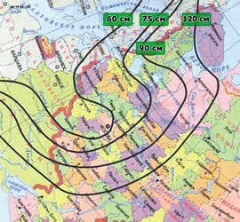
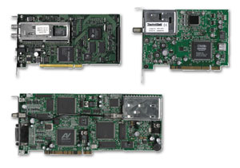
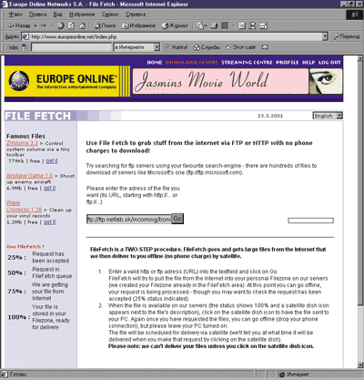
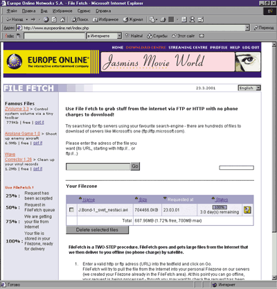
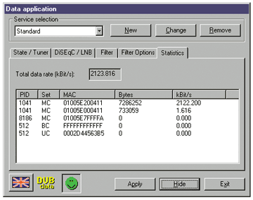
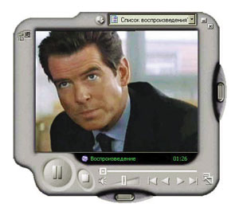

Ростислав Сергеев
rsergeev@bytemag.ru
Переход от аналогового телевещания к цифровому практически предопределил появление технологии спутникового доступа в Интернет. Но настоящая революция в этой области связана с европейским стандартом MPEG-2/DVB, который органически объединил передачу цифровой видео- и аудиоинформации и данных. Другим важным фактором следует считать применение IP-протокола в качестве сетевого стандарта передачи данных. Сегодня уже можно сказать, что в мире определились как устойчивые стандарты цифрового спутникового телевещания и используемый диапазон частот, так и кодировка сигналов и необходимые функции приемного оборудования. В рамках стандарта MPEG-2/DVB термин "спутниковый Интернет" (SI) определяется как спутниковый IP/Мультимедиа (спутниковый IP-ММ) доступ или как "Турбо Интернет", т.е. индивидуальное получение информации с Web-серверов в интерактивном режиме, в котором для запросного канала используется любая низкоскоростная наземная линия, а получение данных происходит через скоростной спутниковый канал.
Прежде чем стать действительно массовым продуктом, спутниковый Интернет был успешно опробован в системах широковещания и мультивещания, на таких бизнес-приложениях, как системы дистанционного образования, информационные системы реального времени, новостные каналы, а также адресная рассылка данных из Интернета (push-технологии). Реализация перечисленных решений через спутник позволяет обеспечить услуги на больших географически распределенных территориях при относительно низкой цене.
Традиционные системы спутниковой связи (CCC) постоянно развиваются, и главная тенденция их развития - удешевление. Но основное препятствие к использованию широкополосного спутникового доступа для Интернета - это стоимость выделенных широкополосных каналов связи: обычно более эффективно использовать каналы связи с низкой полосой пропускания. В настоящее время дорогостоящие симметричные системы типа "точка-точка", монополизирующие спутниковые каналы, уступили место сетям типа "точка-много точек", состоящим из головной управляющей мощной станции (хаба) и набора периферийных станций VSAT (Very Small Aperture Terminals), которые поддерживают эффективное разделение канала средствами специальных методов управления доступом: временного разделения каналов TDMA (Time Division Multiple Access), частотного разделения каналов FDMA (Frequency Division Multiple Access), кодового разделения каналов CDMA (Code Division Multiple Access). Причем наиболее эффективное разделение канала имеет место именно при большом числе клиентов (десять тысяч и более), когда на смену арифметическим методам расчета эффективности приходят статистические. Таким образом, широкополосные каналы (свыше 40 Мбит/с) рентабельны при большом числе подписчиков и ориентированы на корпоративных пользователей или Интернет-провайдеров.
Необходимые элементы
Для организации SI необходимо обеспечить следующее:
- канальные спутниковые ресурсы, определяемые шириной полосы спутникового транспондера (36-52 Мбит/с);
- информационные ресурсы, определяемые каналом выхода в Интернет-магистраль и обычно составляющие 45 Мбит/с (DS-3);
- систему спутниковой связи, которая соединяет операционный центр и пользователя, а также определяет метод управления доступом к каналу (обычно используется метод TDMA) и стандарт вещания (DSSH в DirecPC или DVB/MPEG-2 - в большинстве систем SI).
Анализируя технологии спутникового Интернета, продвигаемые различными компаниями, можно отметить присущие им общие составляющие.
Во-первых, все технологии SI можно разделить по зоне покрытия на региональные и глобальные, а по используемому ими диапазону вещания - на системы Ku (11-14 ГГц) или С (4-6 ГГц). Зона покрытия (footprint) региональных SI ограничена территорией одного континента, но зато благодаря высокой энергетике луча такие системы могут работать со спутниковыми антеннами небольшого диаметра (60-120 см). Это делает их доступными для индивидуальных пользователей и обеспечивает возможность объединения их с системами спутникового ТВ. Каждая региональная система SI имеет один или несколько региональных центров управления (операционных центров, NOC), имеющих высокоскоростной доступ к региональной Интернет-магистрали.
Во-вторых, все системы SI делятся на системы спутникового доступа к Интернет-данным, ориентированные на индивидуального пользователя (они также называются системами информационного доступа), и системы спутникового канального доступа в Интернет, ориентированные на получение большого объема данных крупными корпорациями или местными провайдерами услуг Интернета (ISP). В принципе, и индивидуальные системы доступа позволяют при непрерывной работе закачать за месяц до 100 Гбайт данных, так что ISP могут их использовать с целью наращивания своих канальных ресурсов. Но применение в этих системах технологии TDMA делает их особенно эффективными при обслуживании большого числа кратковременно работающих индивидуальных клиентов, а не длительно занимающих общий ресурс пользователей. При индивидуальном доступе для выхода в Интернет достаточно иметь низкоскоростной коммутируемый канал, а для присутствия в Сети - только один IP-адрес, который для корпоративного решения разделяется между сетевыми клиентами при помощи прокси-сервера. К тому же высокий уровень платы за трафик с трудом допускает посредника (ISP) в цепочку "сервис - оператор - клиент".
В-третьих, в комплект абонентского оборудования для любой из систем, минимальная стоимость которого составляет 300-500 долл., входят приемная антенна, усилитель-конвертор и одно из устройств доступа по выбору пользователя: DVB-модем (PCI-плата для компьютера) со специализированным ПО; DVB-тюнер, оснащенный интерфейсом для подключения к локальной сети, или DVB-маршрутизатор, оснащенный сетевыми интерфейсами и спутниковым модемом. Все компоненты оборудования стандартны и доступны потребителю.
Системы канального доступа
Для выхода в Интернет эти системы используют выделенный канал: спутниковый (для активных систем) или наземный (для только приемных - RO-систем). Для присутствия в Сети такая система обычно имеет сетку IP-адресов, зарегистрированную в INTERNIC, поддерживает первичные и вторичные имена доменов типа yourhost.yourcompany.com, ведет статистику потребления ресурсов своими пользователями. И что особенно важно, оплата трафика не превышает стоимость наземного доступа в Интернет и при 30%-ном (среднестатистическое значение) использовании этого канала составляет порядка 15 центов за 1 Мбайт.
В России на коммерческом уровне такие технологии канального доступа предлагают несколько компаний: Shin Satellite Public (Таиланд), NetSat Express (США), SpeedCast (Phoenix.Net + SES), A&T Trade (Россия) и Web Media Services (Россия). Три первые системы продвигаются в России фирмой "Сеть-Сервис" (http://www.network-service.ru). Недавно на российском рынке появилась и американская компания iDirect, предлагающая канальный симметричный доступ.
Канальный сервис Thaicom Protrunk (Shin Satellite Public) доступен на территории России вплоть до Дальнего Востока, но рекомендуется прежде всего для районов Зауралья и Сибири. Канал связи использует транспондер глобального С-луча спутника Thaicom-3 (позиция, 78,4°East) и выходит в Интернет-магистраль США через шлюз в Дубаи (ОАЭ) с двумя каналами с пропускной способностью 45 Мбит/с в международную Сеть - UUNet и GTE (BBNPlanet). Канальные ресурсы можно приобрести "с нарезкой" в 64 Кбит/с. Предлагается три вида систем: симплексные, дуплексные асимметричные (1:4) и дуплексные симметричные. Используемое в системе оборудование компаний ComStream и Comtech имеет российские сертификаты Минсвязи, что необходимо для получения разрешения на вещание для дуплексных систем.
Сервис NetSat Access Plus предоставляется американской компанией NetSat Express (http://www.netsatx.net). Для доступа к Интернет-магистрали США (телепорт фирмы GSI в районе Нью-Йорка) используется Ku-луч спутника Orion-2 (позиция, 12°West). Канальные ресурсы предлагаются с шагом 64 Кбит/с и гарантированной скоростью доставки информации - Committed Information Rates (CIR), однако пользователь имеет возможность использовать весь незанятый канал. NetSat предлагает два вида систем - активные, основанные на приемо-передающей наземной спутниковой станции (PES) и пассивные - Receive Only (RO), использующие в качестве запросного канала (Uplink) наземные каналы. Данная система может использоваться на европейской части России.
Набор услуг SpeedCast (http://www.speedcast.com) обеспечивается в рамках используемой на Asiasat 3S технологии Phoenix.Net. У спутника Asiasat 3S (мультимедийная платформа Astra Gen2) зона обслуживания с хорошими энергетическими показателями охватывает большую часть территории России (исключая только север Чукотки). В перечень услуг SpeedCast входит и канальный доступ с гарантированной скоростью доставки информации (CIR) от 64 до 1024 Кбит/c, который предоставляется через транспондеры С-диапазона спутника AsiaSat-1 (122° в.д.). Для этого сервиса тоже не требуется сложного оборудования - достаточно антенны и платы, вставляемой в ПК (стоимостью около 200 долл.).
Технология SpeedCast создана компанией PheonixNet (Гонконг) на базе решений, уже опробованных в Astra-Net совместно со специалистами консорциума SES. Операционный центр SpeedCast (SES/Gen II) расположен в Гонконге и связан с Интернет-магистралью UUNet каналом уровня DS3 (45 Мбит/с). Цифровой сигнал передается в стандарте MPEG-2/DVB через транспондер С-диапазона со спутника AsiaSat-3S (105,5° в.д.), зона покрытия которого охватывает практически всю территорию РФ. Максимальная скорость в канале пользователя - 1,5 Мбит/c.
Заметим, что "джентльменский набор" SpeedCast для индивидуального пользователя будет стоить не менее 500 долл. (модемная плата + конвертор + антенна + регистрация), но повременная плата за трафик - 2 долл./ч даст ему существенный выигрыш. За такие деньги, если ты не столичный житель, уже можно подумать о спутниковом Интернете на дому. Правда, антенна для данного диапазона частот имеет достаточно большой диаметр - 1,8-2,2 м. Однако, если организовать коллективную спутниковую систему SMATV, то абоненту она обойдется примерно в 100 долл. в месяц. Кроме доступа в Интернет пользователь SpeedCast может бесплатно принимать около 30 телевизионных программ, получать широковещательную или групповую потоковую и файловую рассылку, а также доступ к финансовым и прочим информационным системам реального времени.
Компания A&T Trade (http://www.attrade.ru) - российский дистрибьютор услуг шведского оператора Nordic Satellite Company (NSAB), которая владеет ССС Sirius с общей "емкостью" более 60 транспондеров FSS и BSS Ku-диапазона. Спутники Sirius обеспечивают практически любые виды спутникового вещания, а также позволяют организовать на их базе опорную сеть для предоставления информационного и канального доступа в Интернет и создания сетей кабельного телевидения. Высокая мощность транспондеров допускает в Европе прием на маленькие параболические антенны диаметром 60 см, однако на европейской части РФ, которую обслуживает КА Sirius 2, требуются антенны больших диаметров - 120-180 см.
Сервисы NSAB ориентированы на Интернет-провайдеров и корпоративных клиентов. Это push-каналы, потоковое видео и Интернет-вещание в стандарте MPEG-2/DVB. Аренда спутниковых каналов возможна "с шагом" по пропускной способности 64 Кбит/с, в том числе и для симметричной связи. Конечно, услуги доступа в Интернет через спутники NSAB можно получить и "индивидуалу". В Москве комплект с антенной диаметром примерно 1,2-1,3 м обойдется в 350-400 долл.
Современные услуги обеспечиваются в ССС Sirius за счет использования открытой платформы IP/DVB. Выходной сигнал DVB принимается любым устройством приема DVB сигнала (сейчас почти все стандартные платы PCI способны принимать сигнал со скоростью около 50 Мбит/c), а все сетевые службы работают по протоколу IP, обеспечивая заказанное клиентом качество сервиса (QoS). Точка приземления потока в Швеции связана высокоскоростным оптоволокном с PoP первичного провайдера D-GIX в Стокгольме.
Один из сервисов NSAB носит название "точка-точка", однако предполагает не только обслуживание отдельных станций и терминалов, но и работу с несколькими пользователями (мультивещание, "точка-много точек") или VSAT-сетями. В пределах зоны спутникового охвата NSAB обеспечивает создание опорной спутниковой сети и полный доступ к глобальным Интернет-магистралям. Для этого сервиса используется европейский луч Sirius в полосе 14/12 МГц (FSS), работающий в режиме "один канал на несущую".
Система комбинированного доступа HeliosNet ("Вэб Медиа Сервисиз", http://www.heliosnet.ru) способна обслуживать всю территорию России (кроме Чукотки) и все страны СНГ. Система ориентирована главным образом на предоставление услуг высокоскоростного коллективного асимметричного доступа в Интернет (для абонента скорость потока составит около 1,5 Мбит/c) и широковещательную передачу данных (зеркалирование серверов, репликация баз данных, транспортировка файлов больших объемов, IP-, теле- и радиовещание). HeliosNet обслуживают два геостационарных космических аппарата (КА): Ямал 100 (точка стояния 90° в.д., зона покрытия - вся территория СНГ от Калининграда до Чукотки) и Intelsat 604 (точка стояния 60° в.д, зона покрытия - европейская часть России и других государств СНГ).
Передача информации через Ямал 100 осуществляется в C-диапазоне частот, поэтому диаметры приемных антенн для клиентов этого КА составляют 1,6-2,4 м. Со спутником Intelsat 604 HeliosNet работает в Ku-диапазоне частот, и размеры приемных параболических антенн не превышают 0,9-1,2 м в зоне покрытия. Трафик пользователей обрабатывается в центре управления HeliosNet в Москве, который обеспечивает каналы в международную Интернет-магистраль ("Pocтелеком", "Глобал Один", "Демос") общей емкостью не менее 10 Мбит/с.
Тарифных планов в HeliosNet всего два: "оплата трафика" и "гарантированный CIR". В первом случае предлагается использовать разделяемый спутниковый канал с пропускной способностью 2 Мбит/с без гарантии определенной полосы пропускания (CIR = 0). Цена за 1 Мбайт - от 10 до 18 центов. Во втором случае - такой же канал, но с гарантированной полосой пропускания и без ограничения трафика (впрочем, ваши желания не должны выходить за рамки трех значений CIR: 64, 128 и 256 Кбит/с). В месяц такой канал обойдется от 1100 до 2600 долл.
Стоимость подключения для любой из систем, как правило, не превышает 50 долл., а установка оборудования выполняется по отдельной калькуляции, в зависимости от конфигурации сопряженных устройств заказчика.
Системы информационного доступа
Из числа систем этого типа, доступных российским пользователям, хорошо известны DirecPC (разработчик Huges Network Systems), Astra-Net (Люксембург), StarSpeeder (Люксембург), EuropeOnline (Люксембург) и "НТВ-Интернет" (Россия). Все это асимметричные системы доступа, которые для отправки исходящих запросов используют коммутируемое (Dial-Up, ISDN) или выделенное соединение с местным провайдером.
На сегодняшний день DirecPC (http://www.direcpc.com) - самая развитая (и, пожалуй, самая дорогая для пользователя) технология информационного доступа, а потому и публикаций о ней не счесть. Хорошо известны и возможности "НТВ-Интернет" (http://www.ntwi.ru), которая принадлежит фирме "НТВ-Интернет" (часть холдинга "Мемонет") и работает через транспондеры спутника W4 (36° в.д.), арендуемые у Eutelsat. Для приема сигнала на большей части территории России достаточно антенны диаметром 60 см.
Сеть Astra-Net (http://www.astra-net.com), созданная европейским консорциумом SES, который владеет спутниковой системой Astra (Европа получает через нее около 800 ТВ-каналов превосходного цифрового качества), специально предназначалась для предоставления широкополосных мультимедийных Интернет-сервисов через спутник. Сеть базируется на собственной, годами отработанной технологической платформе того же названия - Astra-Net, использующей стандарты IP и MPEG-2/DVB. Она предназначена только для предоставления услуг асимметричного доступа в Интернет. Платформа Astra-Net позволяет независимым контент-провайдерам с минимальными затратами запускать новые перспективные сервисы на спутниках Astra. К сожалению, условия для приема большинства транспондеров сети Astra-Net имеются только в северо-западной части России. Заметим, что данное технологическое решение предусматривает расширение сервиса и организацию обратного спутникового канала в Ku-диапазоне (реализация намечена на конец 2001 г.). В рамках данной технологии европейский провайдер Europe Online (http://www.europeonline.com) предоставляет услуги высокоскоростного доступа для пользователей, объединенные программой "Internet via the Sky".
|  | Зона покрытия Astra (Europe Online).
|
Europe Online работает через спутники Astra (19° East), на которых задействованы четыре транспондера. Для российских потребителей наибольший интерес представляет 103-й транспондер, сигнал которого можно принимать на большей части европейской территории России (до долготы Нижнего Новгорода). В Москве уверенный прием возможен с антенной диаметром 75 см. Среди услуг Europe Online выделяется сервис скоростной загрузки файлов с гарантированной скоростью 2 Мбит/с на компьютер пользователя в режиме offline (без использования обратного канала) через собственный Download Center. Через собственный медиа-центр ведется круглосуточное вещание в формате MPEG-4 по восьми каналам с отличным качеством (не уступает обычному телевизионному). Дополнительно каждому пользователю предоставляется возможность узнавать о приходе в его почтовый ящик электронных писем без подключения к Интернет-провайдеру. Можно прочитать и текст письма, если его объем не превышает 7 Kбайт. Российским потребителям этот сервис предоставляет фирма "Омиком" (http://www.omicom.ru). Абонентская плата - около 15 долл. в месяц. Заметим, что Europe Online дополнительно не тарифицирует и не ограничивает входящий трафик, поэтому рекомендуем эту систему тем, кто регулярно выкачивает из сети файлы большого объема: видеофильмы, клипы, видеоролики, MP3-файлы, ПО, демонстрационные версии игр, игры и их обновления (см. врезку «Как использовать Download Center EOL»).
Сервис StarSpeeder (http://www.starspeeder.lu) принадлежит люксембургской компании CBL SA, интересы которой в странах бывшего СССР представляет зарегистрированная в Германии фирма InSat (в РФ реселлером ее услуг выступает фирма "Сеть-Сервис").
Сервисы StarSpeeder обеспечиваются за счет ресурсов спутника Europe*Star 1 (45° East), принадлежащего компании Europe*Star, которая входит в группу компаний Loral. Система StarSpeeder доступна практически на всей европейской части России, размер приемной антенны 75-120 см. В рамках данной системы обеспечивается получение данных из Интернета со скоростью до 400 Кбит/с (40-50 Кбайт/с), т.е. приблизительно в десять раз быстрее скорости обычного модемного соединения. Даже при полной загрузке своих ресурсов StarSpeeder позволяет каждому среднестатистическому пользователю получать в месяц 1,2-1,3 Гбайт данных. Использование механизма VPN (Virtual Private Network) позволяет иметь доступ через спутник ко всем сервисам Интернета (почте, IRC, Napster и остальным), а не только к WWW и FTP, как это было на системах, где использовался доступ через прокси-сервер. Абонентская плата 20 долл. в месяц позволяет получить за это время через спутник не менее 1,5 Гбайт данных.
Следует заметить, что современные DVB-приемники, входящие в абонентский комплект любой системы, позволяют, кроме спутникового Интернета, принимать цифровые спутниковые теле-и радиоканалы в стандарте MPEG-2 (DVB-качество). Большинство из них обеспечивают прием и просмотр на экране компьютера только открытых каналов. Но плата Sky Star 1 при подключении дополнительного CI-модуля обеспечивает декодирование закрытых каналов. Существуют и такие платы (например, Sky Star 3, Sky Star USB), которые, кроме приема телеканалов, обеспечивают запись принимаемой информации на жесткий диск в формате MPEG-2 для последующего просмотра и обработки (функция цифрового видеомагнитофона).
|  | Платы DVB-приемника Skystar.
|
Хотелось бы упомянуть и еще об одной мультимедийной платформе, которая сейчас проходит тестирование. Сервисы OpenSky предоставляются крупнейшим европейским оператором EUTELSAT (http://www.eutelsat.net) через спутник W3 (7° East) и включают асимметричный доступ в Интернет, передачу потокового видео (видеостримминг) и рассылку различной информации (новостной, развлекательной, обновление ПО и т.п.). Создана OpenSky в пику Astra-Net, но, в отличие от спутников Astra, спутник EUTELSAT W3 прекрасно виден на всей европейской территории России при диаметре антенны до 90 см, и этот сервис, безусловно, будет интересен российским пользователям. В числе услуг, которые предполагается предоставлять на платформе OpenSky, необходимо отметить целенаправленное формирование руководством EUTELSAT крупнейшего центра вещания в цифровом формате MPEG-4. Уже сейчас можно принимать более 20 телеканалов, причем тех, которые не только недоступны для приема с этого же спутника, но и тех, которые вообще недоступны для приема в Европе (например, оригинальные каналы американского телевидения).
Симметричный доступ
Компания iDirect (http://www.idirect.net) предлагает комплект того же названия для симметричного широкополосного доступа в Интернет. В состав комплекта входят небольшой спутниковый модем, антенна и передатчик. В настоящее время iDirect работает со спутником Telstar 12 (15° West), принадлежащим концерну Loral, с зоной покрытия до Урала. Оборудование способно работать и с другими спутниками, обеспечивающими обслуживание всей территории России. Доступ к спутниковому ретранслятору в Ku-диапазоне частот на линии "вверх" обеспечивается в режима DAMA (скорость в канале до 2 Мбит/с), а на линии "вниз" возможна работа в одном из двух режимов - SCPC или TDMA при скорости в канале 32-64 Мбит/c.
В конструктиве модема NetModem II реализован конвертор рабочей частоты в верхнюю область L-диапазона частот (гораздо выше 70 МГц), что позволяет повысить эффективность использования ресурса и снизить мощность передатчика (по сравнению с применяемыми в L-диапазоне). В данном комплекте для антенны диаметром 1,2-1,8 м поставляется передатчик мощностью 4 Вт.
Хотелось бы отметить, что в настоящее время партия из 12 изделий iDirect ( NetModem II + антенное оборудование + передатчик) проходит сертификацию в структуре Минсвязи. Лицензию на предоставление телематических услуг, услуг передачи данных, голосовых и факсимильных сообщений, а также разрешение на использование частот будет получать российский провайдер Интернет-услуг "Релком" (http://www.relcom.ru). А сертифицированное оборудование в первую очередь будет установлено в НИИ им. Курчатова, следующая партия - у Интернет-провайдеров Нижнего Новгорода. Стоимость комплекта составляет около 10 тыс. долл., а абонентская плата за "стандартный" спутниковый канал (2 Мбит/с "вверх" и 64 Мбит/с "вниз") - около 1,6 тыс. долл. в месяц.
Как использовать Download Center EOL |
| Опросы российских пользователей сервиса EOL показали, что они не в полной мере освоили оптимальное использование ресурсов сервиса Astra-Net. На деле пользователю доступны скоростная загрузка файлов в режиме offline через Download Center EOL и центр телетрансляций в MPEG-4.
1. Выбираем любой файл из медиатеки или заносим его Web-адрес в меню FileFetch.  2. Дожидаемся окончания загрузки файла на медиа-портал Europe Online. Объем данных для каждой загрузки не должен превышать 700 Мбайт.  Процесс идет в режиме offline (можно даже отключиться от Интернета). 3. Файл находится на медиа-портале. Активизируем режим скоростной загрузки файла через спутник. Система самостоятельно сообщит о времени начала и окончания передачи. Нужно только, чтобы в указанное время компьютер был включен. Загрузка происходит в режиме off-line (можно отключиться от Интернета) с гарантированной скоростью 2 Мбит/с.  Загрузка окончена - можно смотреть кинофильм.  Для того, чтобы в 19 ч 27 мин получить фильм (721 373 184 байт), понадобилось 1 ч 45 мин, чтобы система "закачала" этот файл на свой медиа-портал, + 1 ч 3 мин для передачи его на компьютер. Дополнительное время (1 ч 15 мин) было затрачено на ожидание пересылки файла из-за очереди на сервере (очередь образуется к вечеру, а утром доставка может уложиться и в 5 мин). |